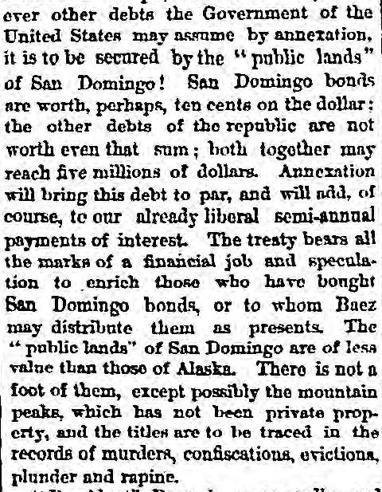
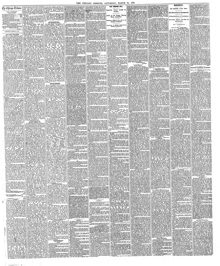

There is not a foot of them, except possibly the mountainNo hay un pie de ellos, excepto posiblemente la montaña
Chicago Tribune. Chicago, Ill., March 26, 1870. Page 2. Published by Tribune Co. A daily newspaper, 1864–1872.Chicago Tribune. Chicago, Ill., 26 de marzo de 1870. Página 2. Publicado por Tribune Co. Periódico diario, 1864–1872. View the originalVer el original


See the full pageVer la página completaThe Chicago Tribune reported on March 26, 1870, that the public lands of San Domingo are nearly all private property with titles rooted in violence, and characterized President Baez as a brutal adventurer seeking to sell his country to escape justice. The newspaper argued that it is not the mission of the United States to buy foreign nations to improve their condition, warning that doing so would set a boundless precedent while burdening Americans with more debt and taxes.El Chicago Tribune afirmó el 26 de marzo de 1870 que las tierras baldías de Santo Domingo constituían casi en su totalidad propiedades particulares con títulos cimentados en la violencia, tachando al presidente Báez de déspota aventurero que buscaba malvender la patria para esquivar la acción de la justicia. La publicación alegó que no correspondía a los Estados Unidos comprar estados foráneos con miras a redimirlos, previniendo que tal medida sentaría un funesto precedente cargando a los contribuyentes con mayores empréstitos e impuestos.
FULL TEXT:TEXTO COMPLETO:
"President" Baez is a cowardly and brutal adventurer, who, having run his career of assassination and despotism, seeks escape from the avenging arm of justice by selling his country and his countrymen for money to a foreign government. It is no answer to say that the Dominicans will be better off as part of the American Republic than they now are. It is no part of the "mission" of the United States to buy foreign peoples to improve their condition. We are surrounded with others scarcely less wretched than the Dominicans. Once admit that it is our duty to buy all unhappy nations whose people may be bettered by the change, and where shall we stop? Mexico, and Central America, Spain, Ireland, Paraguay, Rome, Turkey, Japan, and China, appeal to us even more strongly than San Domingo.«El «Presidente» Báez es un aventurero cobarde y brutal, quien, habiendo corrido su carrera de asesinato y despotismo, busca escapar del brazo vengador de la justicia vendiendo su país y sus compatriotas por dinero a un gobierno extranjero. No es respuesta decir que los dominicanos estarán mejor como parte de la República Estadounidense de lo que están ahora. No es parte de la «misión» de los Estados Unidos comprar pueblos extranjeros para mejorar su condición. Estamos rodeados de otros apenas menos desdichados que los dominicanos. Una vez que se admita que es nuestro deber comprar todas las naciones desdichadas cuyo pueblo pueda ser mejorado por el cambio, ¿dónde nos detendremos? México, y América Central, España, Irlanda, Paraguay, Roma, Turquía, Japón, y China, apelan a nosotros aún más fuertemente que Santo Domingo.
But the effect of the treaty upon San Domingo is not of the least importance compared with the effect upon ourselves. Are we ever to get out of debt? Are we ever to have a reduction of taxes? We have covered up $7,500,000 in the eternal snows of Alaska. A proposition to bury an equal sum under the volcanic rocks of St. Thomas is still pending,—and so borne down by debt that we are paying a tax of 108 per cent on our very salt, are we in a condition to pay a single dime to this blackguard adventurer in San Domingo for the privilege of forcing our institutions upon a people who know no more of them than they do of the Eleusinian mysteries.«Pero el efecto del tratado sobre Santo Domingo no es de la menor importancia comparado con el efecto sobre nosotros mismos. ¿Alguna vez saldremos de la deuda? ¿Alguna vez tendremos una reducción de impuestos? Hemos enterrado $7,500,000 en las nieves eternas de Alaska. Una proposición de enterrar una suma igual bajo las rocas volcánicas de Santo Tomás está todavía pendiente,—y tan agobiados por la deuda que estamos pagando un impuesto de 108 por ciento.
This collection gathers the coverage of the Dominican Republic in the American press, in the order it was published.Esta colección reúne la cobertura de la República Dominicana en la prensa estadounidense, en el orden en que se publicaron.